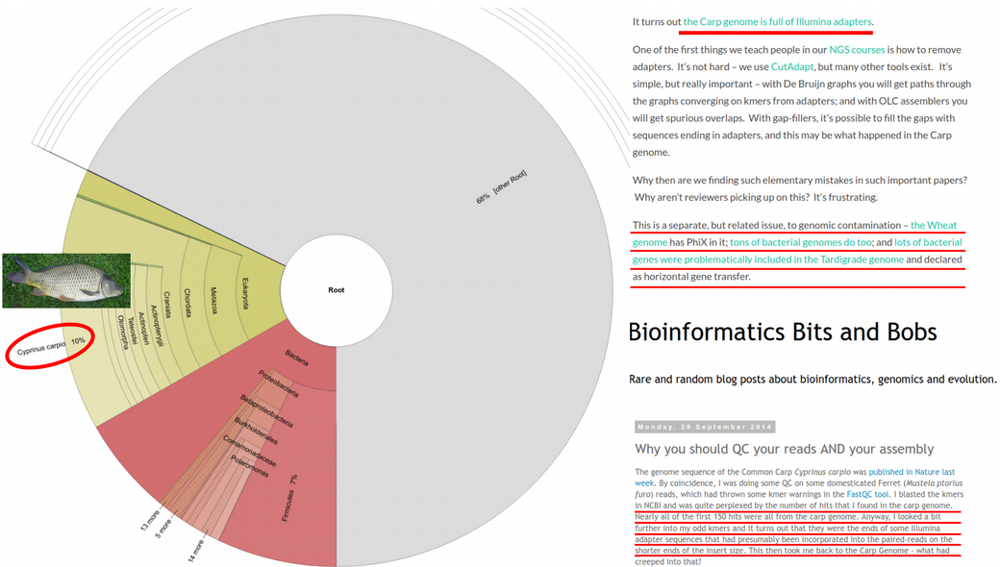

Authentication and Decontamination analysis
For this chapter’s exercises, if not already performed, you will need to create the conda environment from the yml file in the following archive, and activate the environment:
conda activate decontamination-authenticationIntroduction
In ancient metagenomics we typically try to answer two questions: “Who is there?” and “How ancient?”, meaning we would like to detect an organism and investigate whether this organism is ancient. There are three typical ways to identify the presence of an organism in a metagenomic sample:
- alignment of DNA fragments to a reference genome (Bowtie, BWA, Malt etc.)
- taxonomic (kmer-based) classification of DNA fragments (Kraken, MetaPhlan, Centrifuge etc.)
- de-novo genome assembly (Megahit, metaSPAdes etc.)
The first two are reference-based, i.e. they assume a similarity of a query ancient DNA fragment to a modern reference genome in a database. This is a strong assumption, which might not be true for very old or very diverged ancient organisms. This is the case when the reference-free de-novo assembly approach becomes prowerful. However, de-novo assembly has its own computational challenges for low-coverage ancient metagenomic samples that typically contain very short DNA fragments.
While all the three types of metagenomic analysis are suitable for exploring composition of metagenomic samples, they do not directly validate the findings or provide information about ancient or endogenous status of the detected organims. It can happen that the detected organism
- was mis-identified (the DNA belongs to another organism than initially thought),
- has a modern origin (for example, lab or sequencing contaminant)
- is of exogenous origin (for example, an ancient microbe that entered the host post-mortem).
Therefore, additional analysis is needed to follow-up each hit and demonstrate its ancient origin. Below, we describe a few steps that can help ancient metagenomic researchers to verify their findings and put them into biological context.
In this chapter, we will cover:
- how to recognize that a detected organism was mis-identified based on breadth / evenness of coverage
- how to validate findings by breadth of coverage filters via k-mer based taxonomic classification with KrakenUniq
- how to validate findings using alignments and assess mapping quality, edit distance and evenness of coverage profile
- how to detect modern contaminants via deamination profile, DNA fragmentation and post-mortem damage (PMD) scores
- how negative (blank) controls can help disentangle ancient organisms from modern contaminants
- how microbial source tracking can facilitate separating endogenous and exogenous microbial communities
The chapter has the following outline:
- Introduction
- Simulated ancient metagenomic data
- Genomic hit confirmation (how we see a true-positive hit)
- Modern validation criteria
- evenness and breadth of coverage
- alignment quality (edit distance, mapq)
- affinity to reference (percent identity, multi-allelic SNPs)
- Ancient-specific validation
- deamination profile (PMD scores)
- DNA fragmentation
- Modern validation criteria
- Microbiome contamination correction
- Decontamination via negative controls (blanks)
- Similarity to expected microbiome source (microbial source tracking)
Simulated ancient metagenomic data
In this chapter, we will use 10 simulated with gargammel ancient metagenomic samples from Pochon et al. 2023. The simulated data can be accessed via https://doi.org/10.17044/scilifelab.21261405.

To download the simulated ancient metagenomic data please use the following command lines:
wget https://figshare.scilifelab.se/ndownloader/articles/21261405/versions/1 \
&& unzip 1 && rm 1The DNA reads were simulated with damage, sequencing errors and Illumina adapters, therefore one will have to trim the adapters first:
for i in $(ls *.fastq.gz)
do
sample_name=$(basename $i .fastq.gz)
cutadapt -a AGATCGGAAGAG --minimum-length 30 -o ${sample_name}.trimmed.fastq.gz \
${sample_name}.fastq.gz -j 20
doneNow, after the basic data pre-processing has been done, we can proceed with validation, authentication and decontamination analyses.
Genomic hit confirmation
Once an organism has been detected in a sample (via alignment, classification or de-novo assembly), one needs to take a closer look at multiple quality metrics in order to reliably confrm that the organism is not a false-positive detection and is of ancient origin. The methods used for this purpose can be divided into modern validation and ancient-specific validation criteria. Below, we will cover both of them.
Modern validation criteria
The modern validation methods aim at confirming organism presence regradless of its ancient status. The main approaches include evenness / breadth of coverage computation, assessing alignmnet quality, and monitoring affinity of the DNA reads to the reference genome of the potential host.
Depth vs breadth and evenness of coverage
Concluding organism presence by relying solely on the numbers of assigned sequenced reads (aka depth of coverage metric) turns out to be not optimal and too permissive, which may result in a large amount of false-positive discoveries. For example, when using alignment to a reference genome, the mapped reads may demonstrate non-uniform coverage as visualized in the Integrative Genomics Viewer (IGV) below.

In this case, DNA reads originating from another microbe were (mis-)aligned to Yersina pestis reference genome. It can be observed that a large numer the reads align only to a few conserved genomic loci. Therefore, even if many thousands of DNA reads are capable of aligning to the reference genome, the overall uneven alignment pattern suggests no presence of Yersina pestis in the metagenomic sample. Thus, not only the number of assigned reads (proportinal to depth of coverage metric) but also the breadth and evenness of coverage metrics become of particular importance for veryfication of metagenomic findings, i.e. hits with DNA reads uniformly aligned across the reference genome are more likely to be true-positive detections.

In the next sections, we will show how to practically compute the breadth and evenness of coverage via KrakenUniq and Samtools.
Breadth of coverage via KrakenUniq
Here we are going to demonstrate that one can assess breadth of coverage information already at the taxonomic profiling step. Although taxonomic classifiers do not perform alignment, some of them, such as KrakenUniq and Kraken2 provide a way to infer breadth of coverage in addition to the number of assigned reads to a taxon. This allows for immediate filtering out a lot of false positive hits. Since Kraken-family classifiers are typically faster and less memory-demanding, i.e. can work with very large reference databases, compared to genome aligners, they provide a robust and fairly unbiased initial taxonomic profiling, which can still later be followed-up with proper alignment and computing evenness of coverage as described above.
To profile the data with KrakenUniq one needs a database, a pre-built complete microbial NCBI RefSeq database can be accessed via https://doi.org/10.17044/scilifelab.21299541. Please use the following command line to download the databse:
wget https://figshare.scilifelab.se/ndownloader/articles/21299541/versions/1 \
&& unzip 1 && rm 1Then, taxonomic k-mer-based classification of the ancient metagenomic reads can be done via KrakenUniq:
for i in $(ls *.trimmed.fastq.gz)
do
krakenuniq --db KRAKENUNIQ_DB --fastq-input $i --threads 20 \
--classified-out${i}.classified_sequences.krakenuniq \
--unclassified-out ${i}.unclassified_sequences.krakenuniq \
--output ${i}.sequences.krakenuniq --report-file ${i}.krakenuniq.output
doneKrakenUniq by default delivers a proxy metric for breadth of coverage called the number of unique kmers (in the 4th column of its output table) assigned to a taxon. KrakenUniq output can be easily filtered with respect to both depth and breadth of coverage, which substantially reduces the number of false-positive hits.
We can filter the KrakenUniq output with respect to both depth (taxReads) and breadth (kmers) of coverage with the following custom Python script, which selects only species with at east 200 assigned reads and 1000 unique k-mers. After the filtering, we can see a Yersinia pestis hit in the sample 10 that passess the filtering thresholds with respect to both depth and breadth of coverage.
for i in $(ls *.krakenuniq.output)
do
$SCRIPTS_DIR/filter_krakenuniq.py $i 1000 200 $SCRIPTS_DIR/pathogenomesFound.tab
done
We can also easily produce a KrakenUniq taxonomic abundance table krakenuniq_abundance_matrix.txt using the custom R script below, which takes as argument the folder KRAKENUNIQ containing the KrakenUniq output files. From the krakenuniq_abundance_matrix.txt table, it becomes clear that Yersinia pestis seems to be present in a few other samples in addition to sample 10.
Rscript ${SCRIPTS_DIR}/krakenuniq_abundance_matrix.R KRAKENUNIQ \
KRAKENUNIQ_ABUNDANCE_MATRIX 1000 200
While KrakenUniq delivers information about breadth of coverage by default, one has to use a special flag –report-minimizer-data when running Kraken2 in order to get the breadth of coverage proxy which is called the number of distrinct minimizers for the case of Kraken2. Below, we provide an example Kraken2 command line containing the distinct minimizer flag:
DBNAME=Kraken2_DB_directory
KRAKEN_INPUT=sample.fastq.gz
KRAKEN_OUTPUT=Kraken2_output_directory
kraken2 --db $DBNAME --fastq-input $KRAKEN_INPUT --threads 20 \
--classified-out $KRAKEN_OUTPUT/classified_sequences.kraken2 \
--unclassified-out $KRAKEN_OUTPUT/unclassified_sequences.kraken2 \
--output $KRAKEN_OUTPUT/sequences.kraken2 \
--report $KRAKEN_OUTPUT/kraken2.output \
--use-names --report-minimizer-dataThen the filtering of Kraken2 output with respect to breadth and depth of coverage can be done by analogy with filtering KrakenUniq output table. In case of de-novo assembly, the original DNA reads are typically alligned back to the assembled contigs, and the evennes / breadth of coverage can be computed from these alignments.
Evenness of coverage via Samtools
Now, after we have detected an interesting Y. pestis hit, we would like to follow it up, and compute multiple quality metrics (including proper breadth and evenness of coverage) from alignments (Bowtie2 aligner willl be used in our case) of the DNA reads to the Y. pestis reference genome. Below, we download Yersinia pestis reference genome from NCBI, build its Bowtie2 index, and align trimmed reads against Yersinia pestis reference genome with Bowtie2. Do not forget to sort and index the alignments as it will be important for computing the evenness of coverage. It is also recommended to remove multi-mapping reads, i.e. the ones that have MAPQ = 0, at least for Bowtie and BWA aligners that are commonly used in ancient metagenomics. Samtools with -q flag can be used to extract reads with MAPQ > = 1.
NCBI=https://ftp.ncbi.nlm.nih.gov; ID=GCF_000222975.1_ASM22297v1
wget $NCBI/genomes/all/GCF/000/222/975/${ID}/${ID}_genomic.fna.gz
gunzip ${ID}_genomic.fna.gz; echo NC_017168.1 > region.bed
seqtk subseq ${ID}_genomic.fna region.bed > NC_017168.1.fasta
bowtie2-build --large-index NC_017168.1.fasta NC_017168.1.fasta --threads 20
bowtie2 --large-index -x NC_017168.1.fasta --end-to-end --threads 20 \
--very-sensitive -U sample10.trimmed.fastq.gz | samtools view -bS -h -q 1 \
-@ 20 - > Y.pestis_sample10.bam
samtools sort Y.pestis_sample10.bam -@ 20 > Y.pestis_sample10.sorted.bam
samtools index Y.pestis_sample10.sorted.bamNext, the breadth / evenness of coverage can be computed from the BAM-alignments via samtools depth as follows:
samtools depth -a Y.pestis_sample10.sorted.bam > Y.pestis_sample10.sorted.bocand visualized using for example the following R code snippet (alternatively aDNA-BAMPlotter can be used):
# Read output of samtools depth commans
df <- read.delim("Y.pestis_sample10.sorted.boc", header = FALSE, sep = "\t")
names(df) <- c("Ref", "Pos", "N_reads")
# Split reference genome in tiles, compute breadth of coverage for each tile
N_tiles <- 500
step <- (max(df$Pos) - min(df$Pos)) / N_tiles
tiles <- c(0:N_tiles) * step; boc <- vector()
for(i in 1:length(tiles))
{
df_loc <- df[df$Pos >= tiles[i] & df$Pos < tiles[i+1], ]
boc <- append(boc, rep(sum(df_loc$N_reads > 0) / length(df_loc$N_reads),
dim(df_loc)[1]))
}
boc[is.na(boc)]<-0; df$boc <- boc
plot(df$boc ~ df$Pos, type = "s", xlab = "Genome position", ylab = "Coverage")
abline(h = 0, col = "red", lty = 2)
mtext(paste0(round((sum(df$N_reads > 0) / length(df$N_reads)) * 100, 2),
"% of genome covered"), cex = 0.8)
In the R script above, we simply split the reference genome into N_tiles tiles and compute the breadth of coverage (number of reference nucleotides covered by at least one read normalized by the total length) locally in each tile. By visualizing how the local breadth of coverage changes from tile to tile, we can monitor the distribution of the reads across the reference genome. In the evenness of coverage figure above, the reads seem to cover all parts of the reference genome uniformly, which is a good evidence of true-positive detection, even though the total mean breadth of coverage is low due to the low total number of reads.
Alignment quality
In addition to evenness and breadth of coverage, it is very informative to monitor how well the metagenomic reads map to a reference genome. Here one can control for mapping quality (MAPQ field in the BAM-alignments) and the number of mismatches for each read, i.e. edit distance.
Mapping quality (MAPQ) can be extracted from the 5th column of BAM-alignments using Samtools and cut command in bash.
samtools view Y.pestis_sample10.sorted.bam | cut -f5 > mapq.txtThen the 5th column of the filtered BAM-alignment can be visualized via a simple histogram in R as below for two random metagenomic samples.
hist(as.numeric(readLines("mapq.txt")), col = “darkred”, breaks = 100)
Note that MAPQ scores are computed slightly differently for Bowtie and BWA, so they are not directly comparable, however, for both MAPQ ~ 10-30, as in the histograms below, indicates good affinity of the DNA reads to the reference genome. here we provide some examples of how typical MAPQ histograms for Bowtie2 and BWA alignments can look like:

Edit distance can be extracted by gathering information in the NM-tag inside BAM-alignemnts, which reports the number of mismatches for each aligned read. This can be done either in bash / awk, or using handy functions from Rsamtools R package:
library("Rsamtools")
param <- ScanBamParam(tag = "NM")
bam <- scanBam("Y.pestis_sample10.sorted.bam", param = param)
barplot(table(bam[[1]]$tag$NM), ylab="Number of reads", xlab="Number of mismatches")
In the barplot above we can see that the majority of reads align either without or with very few mismatches, which is an evidence of high affinity of the aligned reads with respect to the reference genome. For a true-positive finding, the edit distance barplot typically has a decreasing profile. However, for a very degraded DNA, it can have a mode around 1 or 2, which can also be reasonable. A fasle-positive hit would have a mode of the edit distance barplot shifted toward higher numbers of mismatches.
Affinity to reference
Very related to edit distance is another alignment validation metric which is called percent identity. It represents a barplot demonstrating the numbers of reads that are 100% identical to the reference genome (i.e. map without a single mismatch), 99% identical, 98% identical etc. Misaligned reads originating from another related organism have typically most reads with percent identity of 93-96%. In the figure below, the panels (c–e) demonstrate different percent identity distributions. In panel c, most reads show a high similarity to the reference, which indicates a correct assignment of the reads to the reference. In panel d, most reads are highly dissimilar to the reference, which suggests that they originate from different related species. In some cases, as in panel e, a mixture of correctly assigned and misassigned reads can be observed.

Another important way to detect reads that cross-map between related species is haploidy or checking the amount of multi-allelic SNPs. Because bacteria are haploid organisms, only one allele is expected for each genomic position. Only a small number of multiallelic sites are expected, which can result from a few misassigned or incorrectly aligned reads. In the figure above, panels (f–i) demonstrate histograms of SNP allele frequency distributions. Panel f demonstrates the situation when we have only a few multiallelic sites originating from a misaligned reads. This is a preferrable case scenario corresponding to correct assignment of the reads to the reference. Please also check the corresponding “Good alignments” IGV visualization to the right in the figure above.
In contrast, a large number of multiallelic sites indicates that the assigned reads originate from more than one species or strain, which can result in symmetric allele frequency distributions (e.g., if two species or strains are present in equal abundance) (panel g) or asymmetric distributions (e.g., if two species or strains are present in unequal abundance) (panel h). A large number of misassigned reads from closely related species can result in a large number of multiallelic sites with low frequencies of the derived allele (panel i). The situations (g-i) correspond to incorrect assignment of the reads to the reference. Please also check the corresponding “Bad alignments” IGV visualization to the right in the figure above.
Ancient-specific validation criteria
In contrast to modern genomic hit validation criteria, the ancient-specific validation methods concentrate on DNA degradation and damage pattern as ultimate signs of ancient DNA. Below, we will discuss demination profile, read length distribution and post mortem damage (PMD) scores metrics that provide good confirmation of ancient origin of the detected organism.
Ancient status
Checking evenness of coverage and alignment quality can help us to make sure that the organism we are thinking about is really present in the metagenomic sample. However, we still need to address the question “How ancinet?”. For this purpose we need to compute deamination profile and read length distribution of the aligned reads in order to prove that they demonstrate damage pattern and are sufficiently fragmented, which would be a good evidence of ancient origin of the detected organisms.
Deamination profile of a damaged DNA demonstrate an enrichment of C / T polymorphisms at the ends of the reads compared to all other single nucleotide substitutions. There are several tools for computing demination profile, but perhaps the most popular is mapDamage. The tool can be run using the following command line:
mapDamage -i Y.pestis_sample10.sorted.bam -r NC_017168.1.fasta \
-d MAPDAMAGE --merge-reference-sequences --no-stats
maDamage delivers a bunch of useful statistics, among other read length distribution can be checked. A typical mode of DNA reads should be within a range 30-70 base-pairs in order to be a good evidence of DNA fragmentation. Reads longer tha 100 base-pairs are more likely to originate from modern contamination.

Another useful tool that can be applied to assess how DNA is damaged is PMDtools which is a maximum-likelihood probabilistic model that calculates an ancient score, PMD score, for each read. The ability of PMDtools to infer ancient status with a single read resolution is quite unique and different from mapDamage that can only assess deamination based on a number of reads. PMD scores can be computed using the following command line, please note that Python2 is needed for this purpose.
samtools view -h Y.pestis_sample10.bam | python2 ${SCRIPTS_DIR}/pmdtools.0.60.py \
--printDS > PMDscores.txtThe distribution of PMD scores can be visualized via a histogram in R as follows:
pmd_scores <- read.delim("PMDscores.txt", header = FALSE, sep = "\t")
hist(pmd_scores$V4, breaks = 1000, xlab = "PMDscores")
Typcally, reads with PMD scores greater than 3 are considered to be reliably ancient, i.e. damaged, and can be extracted for taking a closer look. Therefore PMDtools is great for separating ancient reads from modern contaminant reads.
As mapDamage, PMDtools can also compute demination profile. However, the advantage of PMDtools that it can compute deamination profile for UDG / USER treated samples (with the flag –CpG). For this purpose, PMDtools uses only CpG sites which escape the treatment, so deamination is not gone completely and there is a chance to authenticate treated samples. Computing deamination pattern with PMDtoools can be achieved with the following command line (please note that the scripts pmdtools.0.60.py and plotPMD.v2.R can be downloaded from the github repository here https://github.com/pontussk/PMDtools):
samtools view Y.pestis_sample10.bam | python2 ${SCRIPTS_DIR}/pmdtools.0.60.py \
--platypus > PMDtemp.txt
R CMD BATCH plotPMD.v2.R
When performing ancient status analysis on de-novo assembled contigs, it can be computationally challenging and time consuming to run mapDamage or PMDtools on all of them as there can be hundreds of thousands contigs. In addition, the outputs from mapDamage and PMDtools lacking a clear numeric quantitiy or a statistical test that could provide an “ancient vs. non-ancient” desicion for each de-novo assembled contig. To address these limitations, pyDamage tool was recently developed. PyDamage evaluates the amount of aDNA damage and tests the hypothesis whether a model assuming presence of aDNA damage better explains the data than a null model.

pyDamage can be run on a sorted BAM-alignments of the microbial reads to the de-novo assembled contigs using the following command line:
pydamage analyze -w 30 -p 14 filtered.sorted.bamMicrobiome contamination correction
Modern contamination can severely bias ancient metagenomic analysis. Also, ancient contamination, i.e. entered post-mortem, can potentially lead to false biological interpretations. Therefore, a lot of efforts in the ancient metagenomics field are directed on establishing methodology for identification of contaminants. Among them, the use of negative (blank) control samples is perhaps the most reliable and straighforward method. Additionally, one often performs microbial source tracking for predicting environment (including contamination environment) of origin for ancient metagenomic samples.
Decontamination
Modern contamination is one of the major problems in ancient metagenomics analysis. Large fractions of modern bacterial, animal or human DNA in metagenomic samples can lead to false biological and historical conclusions. A lot of scientific literature is dedicated to this topic, and comprehensive tables and sources of potential contamination (e.g. animal and bacterial DNA present in PCR reagensts) are available.

A good practice to discriminate between endogenous and contaminant organisms is to sequence negative controls, so-called blanks. Organisms detected on blanks, like the microbial genera reported in the table below, can substantially facilitate making more informed decision about true metagenomic profile of a sample. Nevertheless, the table below may seem rather conservative since in addition to well-known environmental contaminants as Burkholderia and Pseudomonas it includes also human oral genera as Streptococcus, which are probably less likely to be of environmental origin.

It is typically assumed that an organism found on a blank has a lower confidence to be endogenous to the studied metagenomic sample, and sometimes it is even expluded from the downstream analysis as an unreliable hit. Despite there are attempts to automate filtering out modern contaminants (we will discuss them below), decontamination process still remains to be a tidious manual work where each candidate should be carefully investigated from different contexts in order to prove its ancient and endogenous origin.
If negative control samples (balnks) are available, contaminating organisms can be detected by comparing their abundances in the negative controls with true samples. In this case, contaminant organisms stand out by their high prevalence in both types of samples if one simply plots mean across samples abundance of each detected organism in true samples and negative controls against each other as in the figure below:
samples<-read.delim("krakenuniq_abundance_matrix.txt",header=TRUE,
row.names = 1, check.names = FALSE, sep = "\t")
controls<-read.delim("blank_krakenuniq_abundance_matrix.txt",header=TRUE,
row.names = 1, check.names = FALSE, sep = "\t")
df <- merge(samples, controls, all = TRUE, by = "row.names")
rownames(df)<-df$Row.names; df$Row.names <- NULL; df[is.na(df)] <- 0
true_sample <- subset(df,select=colnames(df)[!grepl("control",colnames(df))])
negative_control <- subset(df,select=colnames(df)[grepl("control",colnames(df))])
plot(log10(rowMeans(true_sample)+1) ~ log10(rowMeans(negative_control)+1),
xlab = "Log10 ( Negative controls )", ylab = "Log10 ( True samples )",
main = "Organism abundance in true samples vs. negative controls",
pch = 19, col = "blue")
points(log10(rowMeans(true_sample)+1)[(log10(rowMeans(true_sample)+1) > 1) &
(log10(rowMeans(negative_control)+1)>1)] ~
log10(rowMeans(negative_control)+1)[(log10(rowMeans(true_sample)+1) > 1) &
(log10(rowMeans(negative_control)+1)>1)], pch = 19, col = "red")
text(log10(rowMeans(true_sample)+1)[(log10(rowMeans(true_sample)+1) > 1) &
(log10(rowMeans(negative_control)+1) > 1)] ~
log10(rowMeans(negative_control)+1)[(log10(rowMeans(true_sample)+1) > 1) &
(log10(rowMeans(negative_control)+1) >1)],
labels = rownames(true_sample)[(log10(rowMeans(true_sample)+1) > 1) &
(log10(rowMeans(negative_control)+1) > 1)], pos = 4)
In the figure above, one point indicates an organism detected in a group of metagenomic samples. The points highlighted by red have high abundance in negative control samples, and therefore they are likely contamiannts.
In addition to PCR reagents and lab contaminants, reference databses can also be contaminanted by various, often microbial, organisms. A typical example that when screening environmental or sedimentary ancient DNA samples, a fish Cyprinos carpio can pop up if adapter trimming procedure was not successful for some reason.

It was noticed that the Cyprinos carpio reference genome available at NCBI contains large fraction of Illumina sequncing adapters. Therefore, appearence of this organism in your analysis may falsely lead your conclusion toward potential lake or river present in the excavation site.
Let us now discuss a few available computational approaches to decontaminate metagenomic samples. One of them is decontam R package that offers a simple statistical test for whether a detected organism is likely contaminant. This approach is useful when DNA quantitation data recording the concentration of DNA in each sample (e.g. PicoGreen fluorescent intensity measures) is available. The idea of the decontam is that contaminant DNA is expected to be present in approximately equal and low concentrations across samples, while sample DNA concentrations can vary widely. As a result, the expected frequency of contaminant DNA varies inversely with total sample DNA concentration (red line in the figure below), while the expected frequency of non-contaminant DNA does not (blue line).

Another popular tool for detecting contaminating microorganisms is Recentrifuge. It works as a classifier that is trained to recognize contaminant microbial organisms. In case of Recentrifuge, one has to use blanks or other negative controls and provide microbial names and abundances on the blanks in order to train Recentrifuge to recognize endogenous vs. contaminant sources.
If one wants to assess the degree of contamination for each sample, there is a handy tool cuperdec, which is an R package that allows a quick comparison of microbial profiles in a query metagenomic sample against a database. The idea of cuperdec is to rank organisms in each sample by their abundance and then using an “expanding window” approach to compute their enrichment in a reference database that contains a comprehensive list of microbial organisms which are specific to a tissue / environment in question. The tool produces so-called Cumulative Percent Decay curves that aim to represent the level of endogenous content of microbiome samples, such as ancient dental calculus, to help to identify samples with low levels of preservation that should be discarded for downstream analysis.
library("cuperdec"); library("magrittr"); library("dplyr")
# Load database (in this case oral database)
data(cuperdec_database_ex)
database <- load_database(cuperdec_database_ex, target = "oral") %>% print()
# Load abundance matrix and metadata
taxatable <- load_taxa_table("krakenuniq_abundance_matrix.txt") %>% print()
metadata <- as_tibble(data.frame(Sample = unique(taxatable$Sample),
Sample_Source = "Oral"))
# Compute cumulative percent decay curves, filter and plot results
curves <- calculate_curve(taxatable, database = database) %>% print()
filter_result <- simple_filter(curves, percent_threshold = 50) %>% print()
plot_cuperdec(curves, metadata = metadata, filter_result)
In the figure above, one curve represents one sample, and the red curves have a very high amount of contamination and very low amount of endogenous DNA. These samples might be considered to be dropped from the downstream analysis.
Microbial source tracking
For the case of ancient microbiome profiling, in addition to traditional inspection of the list of detected organisms and comparing it with the ones detected on blanks, we can use tools that make a prediction on what environment the detected organisms most likely come from.
The most popular and widely used tool is called SourceTracker. SourceTracker is a Bayesian version of the Gaussian Mixture Model (GMM) clustering algorithm that is trained on a user-supplied reference data called Sources, i.e. different classes such as Soil or Human Oral or Human Gut microbial communities etc., and then it can estimate proportion / contribution of each of these sources the users actual samples called Sinks.

Originally, SourceTracker was developed for 16S data, i.e. using only 16S ribosomal RNA genes, but it can be easily trained using also shotgun metagenomics data, which was demonstrated in its metagenomic extension called mSourceTracker and its faster and more scalable version FEAST. The input data for SourceTracker are metadata, i.e. each sample has to have “source” or “sink” annotation as well as environmental label (e.g. Oral, Gut, Soil etc.), and microbial abundances (OTU abundances) quantified in some way, for example through QIIME pipeline, MetaPhlan or Kraken. The SourceTracker R script can be downloaded from https://github.com/danknights/sourcetracker.
Sourcetracker expects two input data frames: metadata with at least sample name, environment and source / sink labels, and abundance matrix. Note that source and sink metadata and abundances have to be merged together prior to using SourceTracker. Here we are going to use data from the Human Microbiome Project (HMP) as sources, and we are going to merge the HMP data with the sink samples into single OTU table and meta-data table.
otus_hmp <- read.delim("otus_hmp.txt", header = TRUE, row.names = 1, sep = "\t")
meta_hmp <- read.delim("meta_hmp.txt", header = TRUE, row.names = 1, sep = "\t")
otus_sink<-read.delim("krakenuniq_abundance_matrix.txt",header=T,row.names=1,sep="\t")
otus <- merge(otus_hmp, otus_sink, all = TRUE, by = "row.names")
rownames(otus) <- otus$Row.names; otus$Row.names <- NULL; otus[is.na(otus)] <- 0
meta_sink <- data.frame(ID = colnames(otus_sink), Env = "Unknown", SourceSink = "sink")
rownames(meta_sink) <- meta_sink$ID; meta_sink$ID<-NULL
metadata <- rbind(meta_hmp, meta_sink)
otus <- as.data.frame(t(as.matrix(otus)))
otus[otus > 0] <- 1; otus <- otus[rowSums(otus)!=0,]
metadata<-metadata[as.character(metadata$Env)!="Vaginal",]; envs <- metadata$Env
common.sample.ids <- intersect(rownames(metadata), rownames(otus))
otus <- otus[common.sample.ids,]; metadata <- metadata[common.sample.ids,]Next, training SourceTracker on source samples and running predictions on sink samples can be done using following command lines:
# Train SourceTracker on sources (HMP) and run predictions on sinks
source('/sourcetracker/src/SourceTracker.r')
train.ix <- which(metadata$SourceSink=='source')
test.ix <- which(metadata$SourceSink=='sink')
st <- sourcetracker(otus[train.ix,], envs[train.ix])
results <- predict(st, otus[test.ix,], alpha1 = 0.001, alpha2 = 0.001)Finally, we can plot SourceTracker environment inference in the form of barcharts as follows:
# Sort SourceTracker proportions for plotting
props <- results$proportions
props <- props[order(-props[,"Oral"]),]
results$proportions <- props
# Prepare SourceTracker output for plotting
name <- rep(rownames(results$proportions), each = 4)
value <- as.numeric(t(results$proportions))
labels <- c("Gut","Oral","Skin","Unknown"); condition<-rep(labels, length(test.ix))
data <- data.frame(name, condition, value)
# Plot SourceTracker inference as a barplot
library("ggplot2")
ggplot(data, aes(fill=condition, y=value, x = reorder(name, seq(1:length(name))))) +
geom_bar(position = "fill", stat = "identity") +
theme(axis.text.x = element_text(angle = 90, size=5, hjust=1, vjust=0.5)) +
xlab("Sample") + ylab("Fraction")
In the figure above the SourceTracker was trained on Human Microbiome Project (HMP) data, and was capable of predicting the fractions of oral, gut, skin or other microbial composition on the query sink samples. In a similar way, environmental soil or marine microbes can be used as Sources. In this way, environmental percentage of contamination can be detected per sample.
A drawback of SourceTracker, mSourceTracker and FEAST is that they require a microbial abundance table after a taxonomic classification with e.g. QIIME or Kraken has been performed. Such taxonomic classification can be biased since it is computed against a reference database with known taxonomic annotation. In contrast, a novel microbial source tracking tool decOM aims at moving away from database-dependent methods and using unsupervised approaches exploiting read-level sequence composition.

decOM uses kmtricks to compute a matrix of k-mer counts on raw reads (FASTQ files) from source samples, and then uses the source k-mer abundance matrix for looking up k-mer composition of sink samples. This allows decOM to calculate microbial contributions / fractions from the sources. For example, for estimating contributions from ancient Oral (aOral), modern Oral (mOral), Skin and Sediment / Soil environments one can use an already computed source matrix from here https://github.com/CamilaDuitama/decOM/ and provide it as a -p_sources parameter. Then decOM can be run using the following command line:
git clone https://github.com/CamilaDuitama/decOM.git
cd decOM
conda env create -n decOM --file environment.yml
conda deactivate
conda activate decOM
export PATH=/absolute/path/to/decOM:${PATH}
# Prepare input fof-files that have a key - value format
cd CUTADAPT # folder containing trimmed fastq-files
for i in {1..10}
do
echo "sample${i}_trimmed : sample${i}_trimmed.fastq.gz" > sample${i}_trimmed.fof
echo sample${i}_trimmed >> FASTQ_NAMES_LIST.txt
done
# Download pre-built kmer-matrix of sources (aOral, mOral, Sediment/Soil, Skin)
wget https://zenodo.org/record/6513520/files/decOM_sources.tar.gz
tar -xf decOM_sources.tar.gz
# Run decOM predictions
decOM -p_sources decOM_sources/ -p_sinks FASTQ_NAMES_LIST.txt \
-p_keys decOM/FASTQ -mem 900GB -t 15In the command line above, he -p_sinks parameter provides a list of sink samples, for example SRR13355807. The sink fastq-files are placed in decOM/FASTQ together with keys fof-files containing the mapping between fastq file names and locations of the fastq-files, for example SRR13355807 : decOM/FASTQ/SRR13355807.fastq.gz. The contributions from the sources to the sink samples, which are recorded in the decOM_output.csv output file, can then be processed and plotted as follows:
df<-read.csv("decOM_output.csv", check.names=FALSE)
result <- subset(df, select = c("Sink", "Sediment/Soil", "Skin", "aOral",
"mOral", "Unknown"))
rownames(result) <- result$Sink; result$Sink <- NULL
result <- result / rowSums(result)
result<-result[order(-result$aOral),]
name <- rep(rownames(result), each = 5); value <- as.numeric(t(result))
condition <- rep(c("Sediment/Soil","Skin","aOral","mOral","Unknown"),
dim(result)[1])
data <- data.frame(name, condition, value)
library("ggplot2"); library("viridis")
ggplot(data, aes(fill=condition, y=value, x=reorder(name,seq(1:length(name))))) +
geom_bar(position = "fill", stat = "identity") +
theme(axis.text.x = element_text(angle=90, size = 5, hjust = 1, vjust = 0.5)) +
xlab("Sample") + ylab("Fraction")
decOM has certain advantages compared to SourceTracker as its is a taxonomic classification / database free approach. However, it also appears to be very sensitive to the particular training / source data set. In the example above it can be seen that the microbial source tracking of sink samples is very much dominated by the Oral community, which was the training / source data set.
Summary
In this chapter we have learned that:
Evenness of coverage is an important metric for validation of findings
Deamination profile, DNA fragmentation, mapping quality, edit distance and PMD scores are other authentication / validation metrics to consider
Negative controls are important for disentangling ancient / endogenous from modern / exogenous contamination
Microbial source tracking is another layer of evidence that can facilitate interpretation of ancient metagenomic findings
Questions to think about
What is a false-positive microbial finding and how can we recognize it?
What is the diffeerence between depth, breadth and evenness of coverage?
What is contamination and how can it bias ancient metagenomic analysis?
How can we separate ancient from modern DNA sequence?
What is a negative (blank) control sample and why is it useful to have?
What is microbial source tracking and how can it help with decontamination?
Readings
Clio Der Sarkissian, Irina M. Velsko, Anna K. Fotakis, Åshild J. Vågene, Alexander Hübner, and James A. Fellows Yates, Ancient Metagenomic Studies: Considerations for the Wider Scientific Community, mSystems 2021 Volume 6 Issue 6 e01315-21.
Warinner C, Herbig A, Mann A, Fellows Yates JA, Weiß CL, Burbano HA, Orlando L, Krause J. A Robust Framework for Microbial Archaeology. Annu Rev Genomics Hum Genet. 2017 Aug 31;18:321-356. doi: 10.1146/annurev-genom-091416-035526. Epub 2017 Apr 26. PMID: 28460196; PMCID: PMC5581243.
Orlando, L., Allaby, R., Skoglund, P. et al. Ancient DNA analysis. Nat Rev Methods Primers 1, 14 (2021). https://doi.org/10.1038/s43586-020-00011-0
Resources
KrakenUniq: Breitwieser, F. P., Baker, D. N., & Salzberg, S. L. (2018). KrakenUniq: confident and fast metagenomics classification using unique k-mer counts. Genome Biology, vol. 19(1), p. 1–10. http://www.ec.gc.ca/education/default.asp?lang=En&n=44E5E9BB-1
Samtools: Heng Li, Bob Handsaker, Alec Wysoker, Tim Fennell, Jue Ruan, Nils Homer, Gabor Marth, Goncalo Abecasis, Richard Durbin, 1000 Genome Project Data Processing Subgroup, The Sequence Alignment/Map format and SAMtools, Bioinformatics, Volume 25, Issue 16, 15 August 2009, Pages 2078–2079, https://doi.org/10.1093/bioinformatics/btp352
PMDtools: Skoglund P, Northoff BH, Shunkov MV, Derevianko AP, Pääbo S, Krause J, Jakobsson M. Separating endogenous ancient DNA from modern day contamination in a Siberian Neandertal. Proc Natl Acad Sci U S A. 2014 Feb 11;111(6):2229-34. doi: 10.1073/pnas.1318934111. Epub 2014 Jan 27. PMID: 24469802; PMCID: PMC3926038.
pyDamage: Borry M, Hübner A, Rohrlach AB, Warinner C. PyDamage: automated ancient damage identification and estimation for contigs in ancient DNA de novo assembly. PeerJ. 2021 Jul 27;9:e11845. doi: 10.7717/peerj.11845. PMID: 34395085; PMCID: PMC8323603.
SourceTracker: Knights D, Kuczynski J, Charlson ES, Zaneveld J, Mozer MC, Collman RG, Bushman FD, Knight R, Kelley ST. Bayesian community-wide culture-independent microbial source tracking. Nat Methods. 2011 Jul 17;8(9):761-3. doi: 10.1038/nmeth.1650. PMID: 21765408; PMCID: PMC3791591.
deCOM: https://www.biorxiv.org/content/10.1101/2023.01.26.525439v1, doi: https://doi.org/10.1101/2023.01.26.525439
aMeta: https://www.biorxiv.org/content/10.1101/2022.10.03.510579v1, doi: https://doi.org/10.1101/2022.10.03.510579
Bowtie2: Langmead, B., Salzberg, S. Fast gapped-read alignment with Bowtie 2. Nat Methods 9, 357–359 (2012). https://doi.org/10.1038/nmeth.1923
cuperdec: https://cran.r-project.org/web/packages/cuperdec/index.html
decontam: https://www.bioconductor.org/packages/release/bioc/html/decontam.html